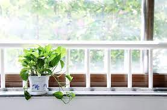

The Recipe for Recipes
The ONE Secret That THEY Won't Tell You!
Are you a human that just lovesss making recipes altruisticly so that others can enjoy the fruits of
YOUR labor? Do you want to make a simple and easy recipe so that fellow human beings can recreate YOUR
marvelous creation in all its glory? HELL NO, DIDN'T THINK SO! If you create a recipe that can be replicated by inferior people
than it discredits your ridiculous fallacy of being strong, independent, loyal, and different from all the others. And by others
I mean all these people that think they are the same as you, which they are, but you can't let them know that!
As such, it is important VITAL to cement your legacy as SPECIAL into the minds of the people
that you don't care for anyway, because they are inferior to the magnificently talented being that you
know you are.
Thus, it is with great integrity that I bestow upon you this Recipe for All Recipes. It is easy, simple, safe, and effective.
Things you will need for the Recipe of All Recipes
- Blog Post
- Pictures of the incredible things you can create with your unique, bold, and courageous recipes
- Video taking device of your choice
- Eye Glasses
- Dictionary
- A warm, calm, demeanor that tells the viewer "wow that person is sooooo relatable and trustworthy and
most definitely has my best interests in mind"
- A positive and friendly attitude with moderate undertones of sass (important!)
- Secret Ingredient (Revealed in the Steps Section!)
Chronological Order Of Steps To Take That Are Completely Arbitray
OK if you have gathered all the things then you are half way there, you can do this!
However, this is where things can get a
bit spicy! But don't worry, follow the following steps in precise order and you will finally have the
comprehensive recipe of
all recipes that will be the only recipe you need to make your recipes that you can share to all your family and friends!
- Write your recipe in a blog post! But don't write it just any way, right it the write way!
- Make sure to make your blog damn near impossible to understand. I'm talking about ridiculously elongated and unnecessarily exquisitely defiant
word choices in seemingly dubious fashion. Also, be sure to sprinkle a few french words here and there in italics, not only does it make it seem much more pretentieuse
but it also makes it glaringly obvious that you know what you are talking about!
Now you know why you needed the Dictionary huh? It's not that you have a subpar and inadequate grasp of the english language, it's because you're just too relatable and down to earth
to speak in such a pretentieux manner. Oui Oui!
- Next make sure to state that the recipe is "easy and simple" near the beginning. This is important so that people will give your recipe a shot in the first place.
However (IMPORTANT!), you must quickly and smoothly continue to make your recipe more and more convoluted and complicated. This is what us experts call a win Win!.
T
- The first win is that it will show them that you find this seemingly impossible recipe, which it is, easy for your level of human intellectual capacity.
You are so special and smart that this recipe to you is as simple as designing and developing an economically self sufficient carbin fiber
solar rotisserie oven, which it is.
- The second win is if they can somehow comprehend any of your recipe and implausibly end up creating something, they will compare it to the images of the completed product that you put on the blog
and it will look pathetically inadequate in comparison
- Enchante!
- Remember those photos in the ingredients list that you gathered, well now is the time to use them! Make sure to put ridiculously cheesy (pun intended!) and unrealistic photos of
the desired creation. Also, DO NOT forget to put seemingly unrelated happy things/people all over your blog post, your viewers need to
see these photos because it's so fun and quirky

- Now for the second part. Record a video of your geniusneses! This is where those eye glasses will come in handy, but make
sure to have them on your eyes not in your hands. Now for this part we need to have a little bit more order than in our previous blog post (no particular order necessary, you can do the video first!)
Make sure to have plenty of cool and interesting and smart and unique things in the background of your video to make them think "this person is so interesting and cool!
Unique is good but dont be too unique. You need to conform to the commonly socially accepted idea of what unique is.
- So now you have your glasses on, your random things you never need and/or use in the background of the video, now it's time to show the viewer how to create the amazing creation!
Regardless of whatever it is make sure to break it down into 5 total steps. Anything more and it will be too complicated. 3 is ideal, its a good number, its odd, and its lucky.
Lucky for you the rule of thumb is this: the fewer the steps the better! People will think they have a chance to actually create it and bonus, you spend less time actually having to
do anything and/or edit the video!.
- As you record the steps of your brilliant recipe make sure to do it quickly and do not be thorough (VERY IMPORTANT, explanation given in the next step)
Make sure to put plenty of splices in your video with random scenery that compliments the scene, like the warm sunglight falling into your window sill. Extra bonus points if
you can add in generic lofi and or indie instrumentals into your video, people love music!

That warm voice and relatable yet sassy demeanor? Yeah now is the time to shine, like the warm sunlight through your window sill. Laugh playfully throughout as if you are having
a grandious time! Also, jokes jokes jokes! What would a recipe video be without a a few unprovoked instances for you to show your amazing personality, it would be a recipe for disaster thats what!
- And LAST but NOT LEAST the final step!!! And this is where the secret ingredient is revealed! Unnecessary preposterous drum roll!!!!!
SOCIAL MEDIA! What is the point of going through all your half ass trouble of making any of this content to show that you are better than people if they don't see it.
As a wise man once said, if a recipe falls down in the middle of a kitchen and no one is around to make it, does it actually prove you're superiority to your friends and family!
So go out there and SPAM SPAM SPAM! I mean everwhere! Post anywhere and everywhere! Bring it up as a non sequitir in any conversation you can. There is no limit to your desperate
need to be special and thats especially useful for this step.
Wasn't that Recipe so Easy, Simple, and Delicious!
Congratulations! You did it just like me right?! Of course you did because of my easy and simple recipe to a glorious creation of my own invention that i gratiously and
nobally bestowed upon you. If you have any questions (which you won't because my easy recipe instructions were so amazing) or comments (which will only be approved if they depict
my intellect/superiority) please make sure to leave them below, I read all of them! (Even if i cared about your dispensible and insignificant verbiose statements, which i don't, I wouldn't
have the mental capacity to endure your subpar incontinuity declarations of language)
P.S. This Recipe to Make RecipesTM is trademarked and propietary. If copied, laughed at, or otherwise missused you will be sued to the highest extent of the law domestic and/or internationally. Copying my intellectual property is theft!
P.S. If you copy this recipe make sure to put lots of p.s.'s at the bottom. Also, italicize and bold as much as possible.
P.S. What is easy, simple, effective, strong, independent, intellecuoqial, and Delicious? This recipe for recipes. Oui Oui Merci!